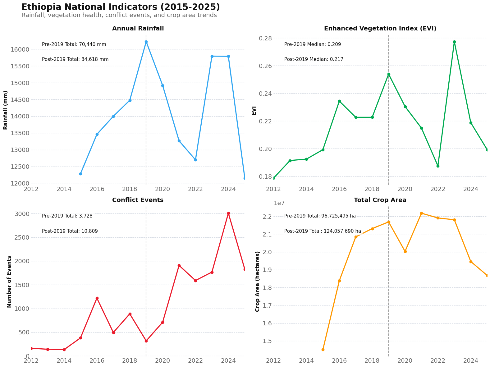
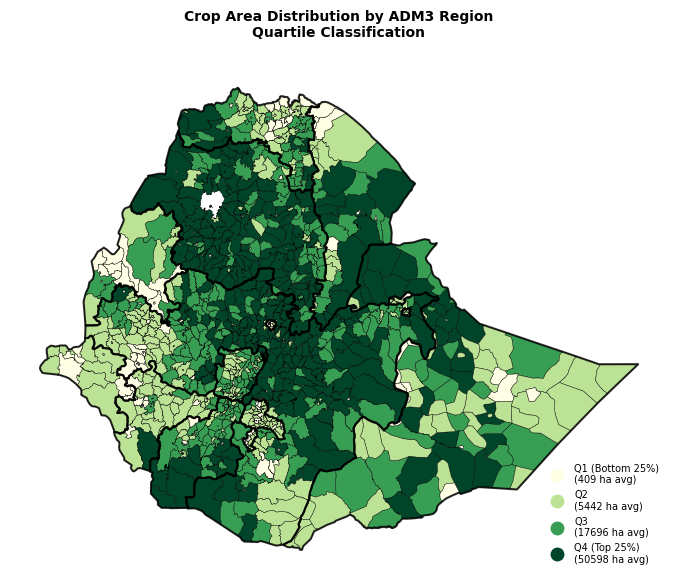
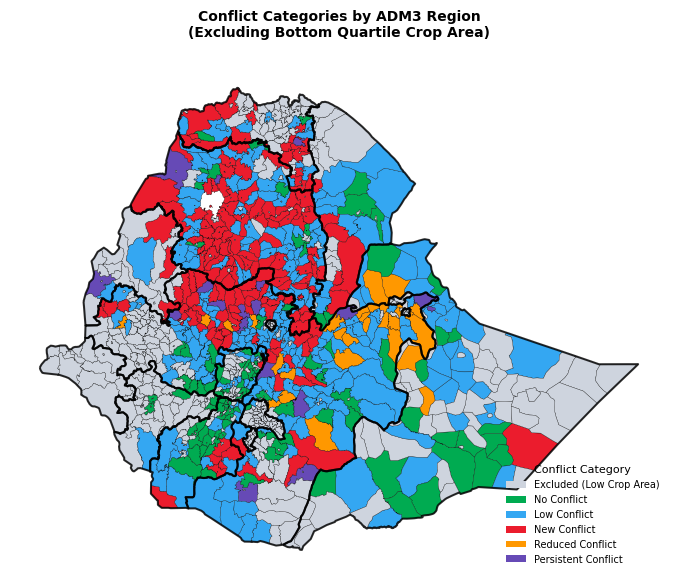
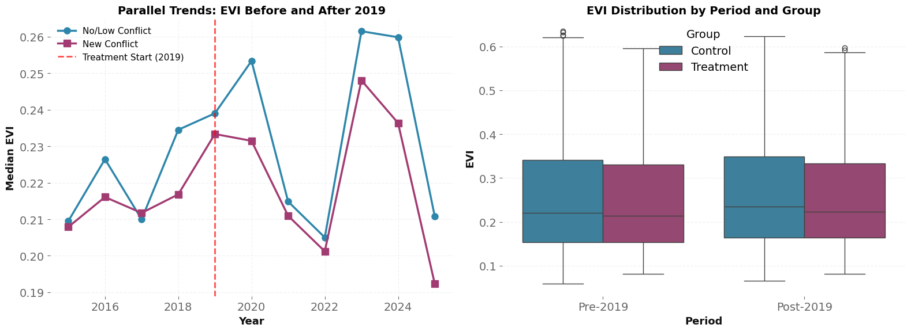
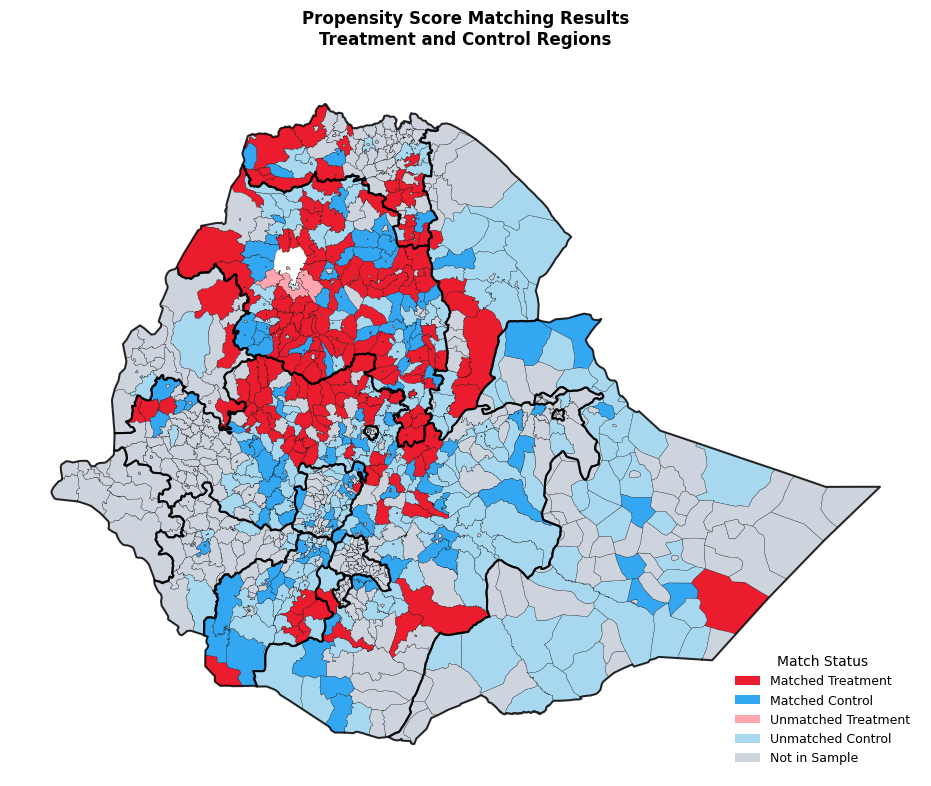

Conflict and Agricultural Output#
This notebook conducts a diff-in-diff analysis to understand if conflict ahs impacted agricultural activity.
EVI is considered as a proxy for agricultural output. Fixed effects are taken from rainfall. Conflict values are obatined from ACLED. Additionally, we use crop area statistics to see if crop area changed because of conflict.
National Trends#
The autoreload extension is already loaded. To reload it, use:
%reload_ext autoreload

Identifying Control and Treatment Groups#
This analysis uses a difference-in-differences design to estimate the causal effect of conflict escalation on agricultural vegetation (EVI).
Step 1: Exclude Low Agricultural Regions
Remove the bottom 50% of regions by crop area (median threshold)
Result: ~541 regions excluded from analysis
Step 2: Classify Remaining Regions by Conflict Pattern
Time periods:
Pre-conflict period: 2015-2019 (≤2019)
Post-conflict period: 2020-2025 (>2019)
Classification criteria (using 10 events per period as threshold):
Treatment Group - “New Conflict”:
Pre-conflict: ≤10 events
Post-conflict: >10 events
These regions experienced conflict escalation after 2019
Control Group - “No/Low Conflict”:
No conflict: 0 events in ACLED database
Low conflict: ≤10 events in both periods
These regions remained peaceful or had minimal conflict throughout
Excluded from DiD Analysis:
Reduced conflict: pre>10, post≤10 (conflict de-escalation)
Persistent conflict: >10 events in both periods (always high conflict)
Identification Strategy#
The treatment effect (β₁) is identified by comparing:
The change in EVI for new conflict regions (pre to post 2019)
vs. the change in EVI for no/low conflict regions (pre to post 2019)
Key Assumption: Parallel trends - absent conflict escalation, new conflict and no/low conflict regions would have followed similar EVI trajectories.


Excluded (Low Crop Area): 541 regions
No Conflict: 103 regions
Low Conflict: 232 regions
New Conflict: 160 regions
Reduced Conflict: 28 regions
Persistent Conflict: 18 regions
Difference-in-Difference Regression#
EVI_it = β₀ + β₁(NewConflict_i × Post_t) + β₂(Rainfall_it) + β₃(CropArea_it) + α_i + γ_t + ε_it
EVI_it = Enhanced Vegetation Index for region i in month t
NewConflict_i = 1 if region escalated to conflict, 0 if no/low conflict
Post_t = 1 if month ≥ 2019, 0 otherwise
Rainfall_it = Rainfall in current month (mm)
CropArea_it = Crop area in region i in year t (hectares)
α_i = Admin 3 region fixed effects
γ_t = Monthly time fixed effects
Note: CropSeason variable is omitted as it’s perfectly collinear with monthly time fixed effects (TimeEffects).
Assumptions: The treatment and control groups will grow in the same way, if not for conflict.
Total Admin 3 regions: 495
- Treatment (New Conflict): 160
- Control (No Conflict): 335
Total observations: 62,854
Time period: 2015 - 2025
Number of crop seasons: 2
T-TEST FOR PRE-2019 EVI DIFFERENCE
t-statistic: 2.341
p-value: 0.019

Does Conflict Impact EVI?
/var/folders/gs/_227cnyd0pq1fr817_0jbcyw0000gp/T/ipykernel_19197/2681300166.py:15: AbsorbingEffectWarning:
Variables have been fully absorbed and have removed from the regression:
CropSeason
result = model.fit(cov_type='clustered', cluster_entity=True)
| Dep. Variable: | EVI | R-squared: | 0.1618 |
|---|---|---|---|
| Estimator: | PanelOLS | R-squared (Between): | 0.2197 |
| No. Observations: | 62854 | R-squared (Within): | 0.2528 |
| Date: | Thu, Oct 30 2025 | R-squared (Overall): | 0.2234 |
| Time: | 09:37:54 | Log-likelihood | 9.237e+04 |
| Cov. Estimator: | Clustered | ||
| F-statistic: | 4004.7 | ||
| Entities: | 495 | P-value | 0.0000 |
| Avg Obs: | 126.98 | Distribution: | F(3,62230) |
| Min Obs: | 116.00 | ||
| Max Obs: | 127.00 | F-statistic (robust): | 437.85 |
| P-value | 0.0000 | ||
| Time periods: | 127 | Distribution: | F(3,62230) |
| Avg Obs: | 494.91 | ||
| Min Obs: | 494.00 | ||
| Max Obs: | 495.00 | ||
| Parameter | Std. Err. | T-stat | P-value | Lower CI | Upper CI | |
|---|---|---|---|---|---|---|
| treated_post | -0.0036 | 0.0012 | -3.0986 | 0.0019 | -0.0060 | -0.0013 |
| rainfall_mm | 0.0004 | 1.154e-05 | 35.707 | 0.0000 | 0.0004 | 0.0004 |
| crop_area | -2.179e-07 | 5.908e-08 | -3.6881 | 0.0002 | -3.337e-07 | -1.021e-07 |
F-test for Poolability: 188.39
P-value: 0.0000
Distribution: F(620,62230)
Included effects: Entity, Time

=== Match Status Summary ===
Matched Treatment: 157 regions
Matched Control: 110 regions
Unmatched Treatment: 3 regions
Unmatched Control: 225 regions
Not in Sample: 587 regions
Matched sample statistics:
Total regions: 267
- Treatment: 157
- Control: 110
Total observations: 33,898
Time period: 2015 - 2025
======================================================================
MATCHED DIFFERENCE-IN-DIFFERENCES RESULTS
======================================================================
/var/folders/gs/_227cnyd0pq1fr817_0jbcyw0000gp/T/ipykernel_19951/3660358278.py:23: AbsorbingEffectWarning:
Variables have been fully absorbed and have removed from the regression:
CropSeason
results_matched = model_matched.fit(cov_type='clustered', cluster_entity=True)
| Dep. Variable: | EVI | R-squared: | 0.1435 |
|---|---|---|---|
| Estimator: | PanelOLS | R-squared (Between): | 0.2099 |
| No. Observations: | 33898 | R-squared (Within): | 0.2540 |
| Date: | Wed, Oct 29 2025 | R-squared (Overall): | 0.2151 |
| Time: | 00:59:15 | Log-likelihood | 5.214e+04 |
| Cov. Estimator: | Clustered | ||
| F-statistic: | 1871.5 | ||
| Entities: | 267 | P-value | 0.0000 |
| Avg Obs: | 126.96 | Distribution: | F(3,33502) |
| Min Obs: | 116.00 | ||
| Max Obs: | 127.00 | F-statistic (robust): | 158.43 |
| P-value | 0.0000 | ||
| Time periods: | 127 | Distribution: | F(3,33502) |
| Avg Obs: | 266.91 | ||
| Min Obs: | 266.00 | ||
| Max Obs: | 267.00 | ||
| Parameter | Std. Err. | T-stat | P-value | Lower CI | Upper CI | |
|---|---|---|---|---|---|---|
| treated_post | -0.0033 | 0.0016 | -2.0798 | 0.0376 | -0.0064 | -0.0002 |
| rainfall_mm | 0.0004 | 1.735e-05 | 21.590 | 0.0000 | 0.0003 | 0.0004 |
| crop_area | -1.827e-07 | 7.634e-08 | -2.3933 | 0.0167 | -3.323e-07 | -3.307e-08 |
F-test for Poolability: 197.94
P-value: 0.0000
Distribution: F(392,33502)
Included effects: Entity, Time